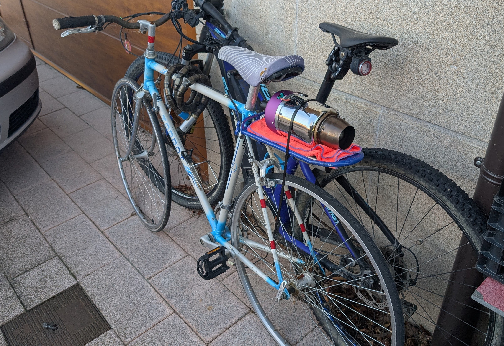
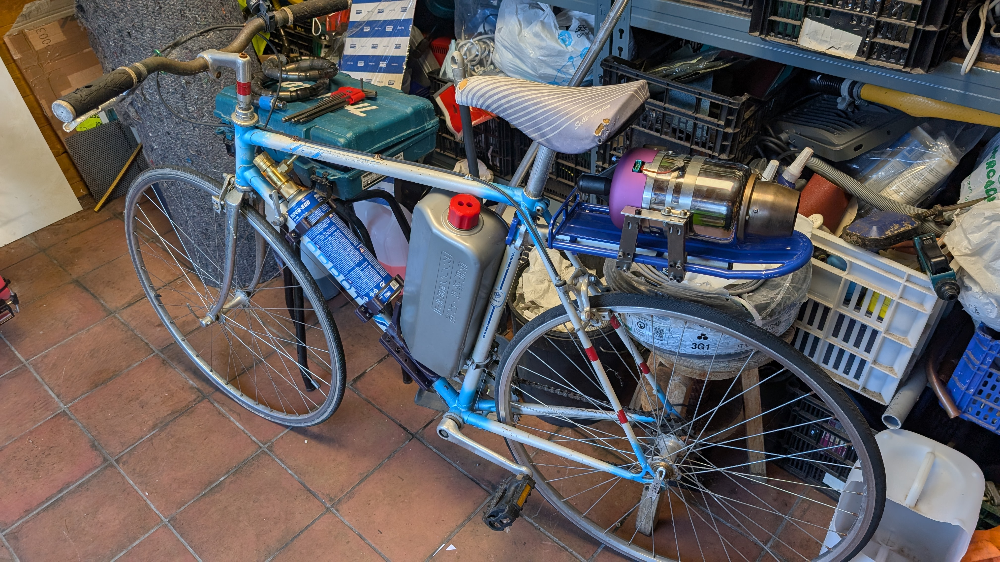
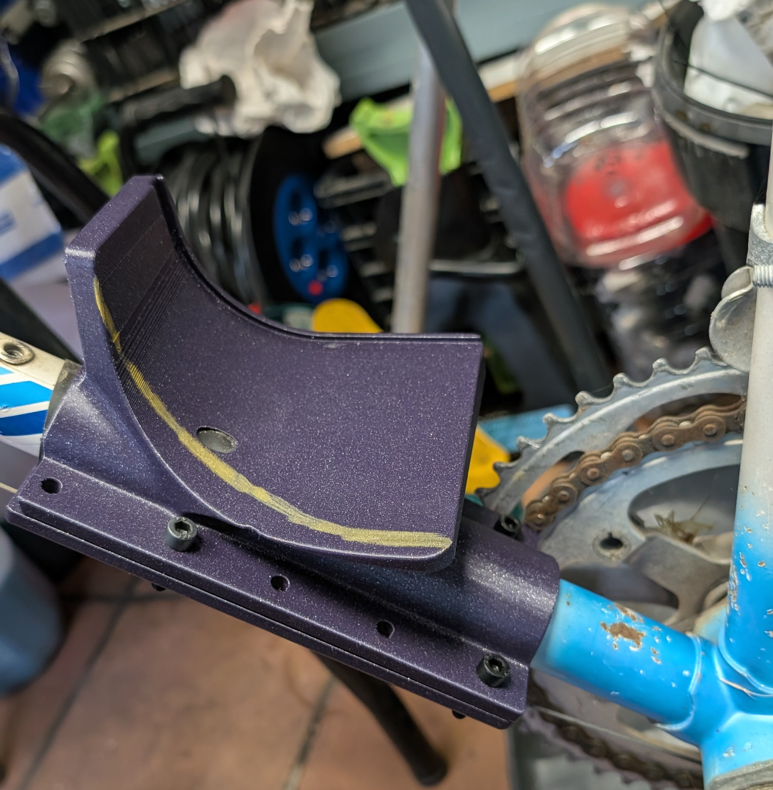
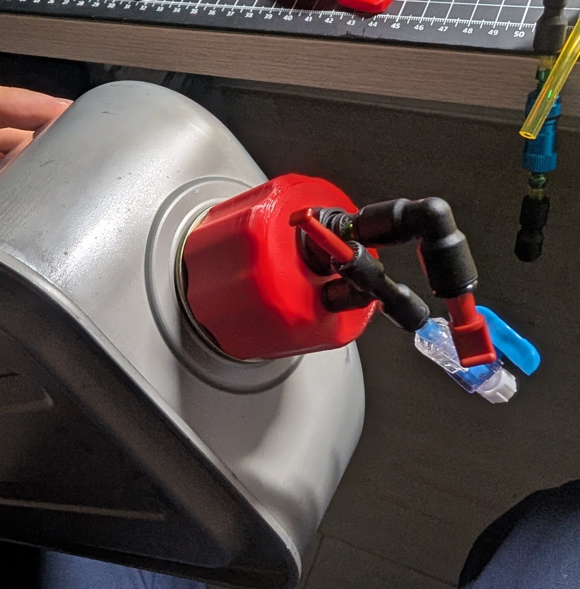
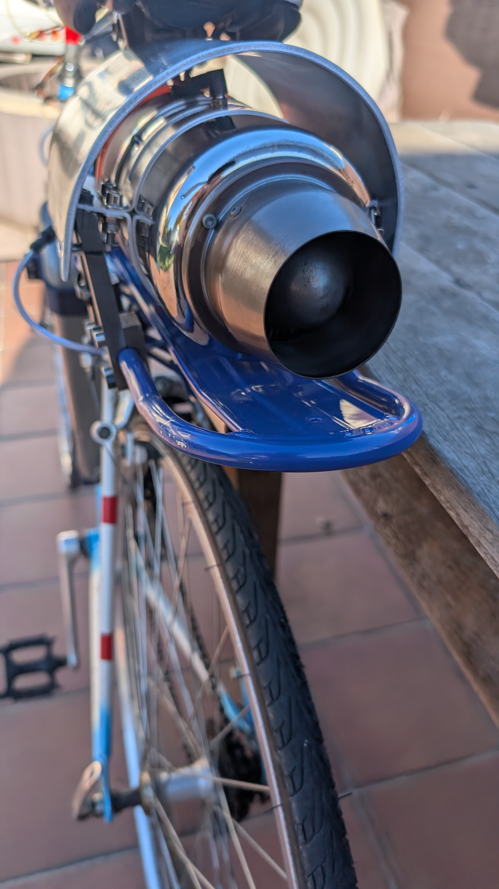
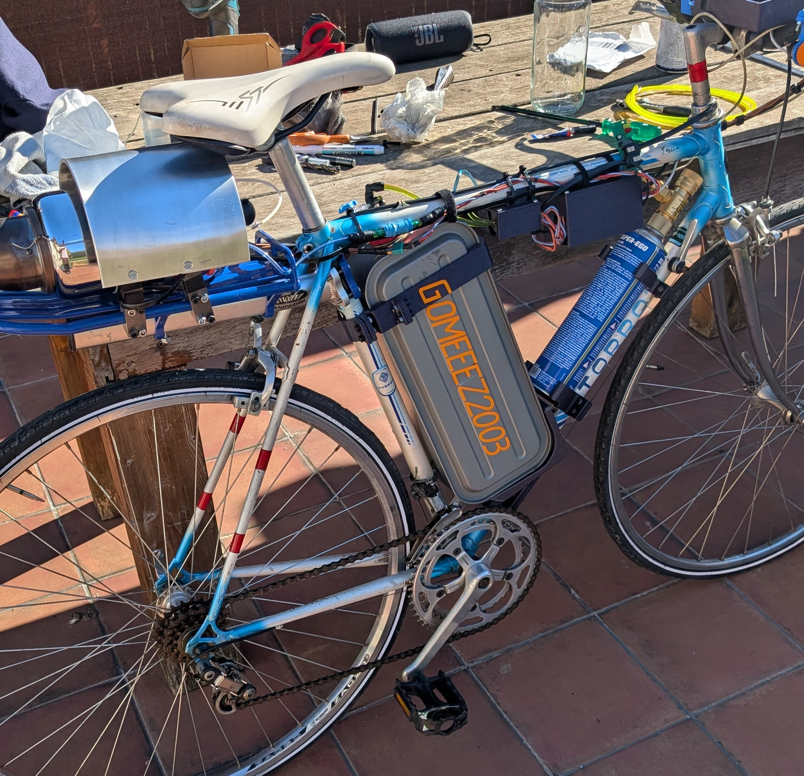
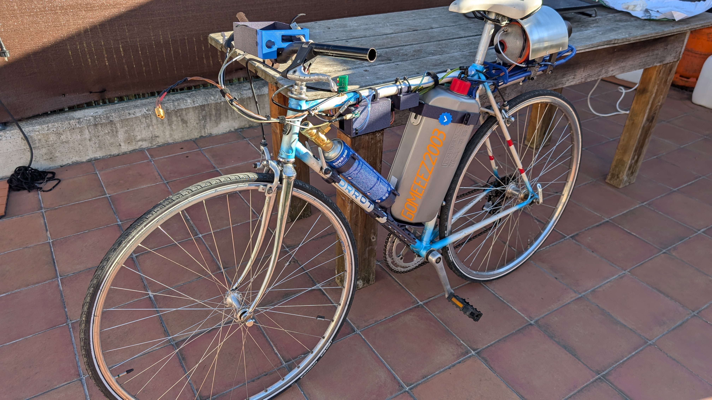

← Volver a Turbici General
Turbici: Mecánica y Chasis
Fase 1: Refuerzo y Modificación del Chasis
Para poder soportar el inmenso empuje lineal de la turbina, fue necesario someter el cuadro de la bicicleta a un rediseño estructural, aplicando técnicas de soldadura TIG/MIG para garantizar la máxima rigidez.




Fase 2: Aislamiento Térmico y Anclajes
La turbina jet alcanza temperaturas críticas en su cámara de combustión. Diseñé un sistema de anclajes mecanizados a medida y barreras de disipación térmica para proteger los componentes cercanos y garantizar la seguridad total.




Integración y Packaging 3D
Toda la placa de control, junto con las baterías y los módulos de señal, fue empaquetada en carcasas personalizadas diseñadas en CAD e impresas en 3D para protegerlas de la intemperie y las vibraciones.